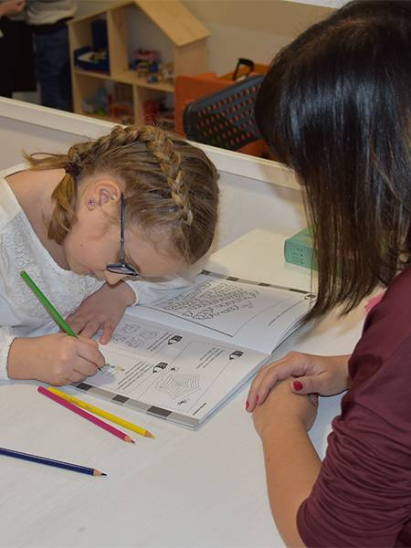
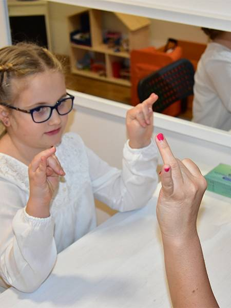
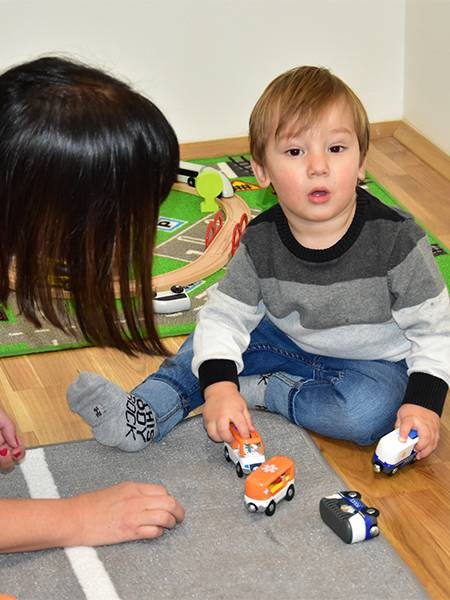
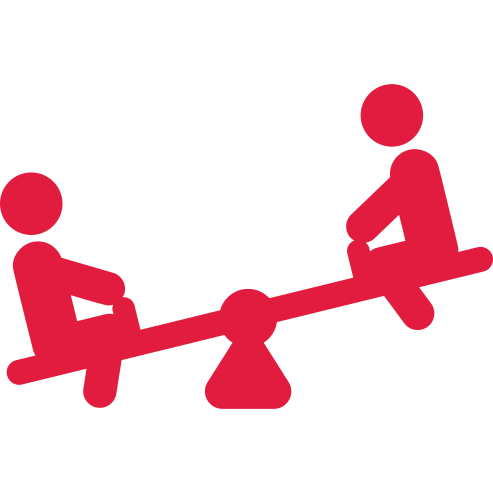
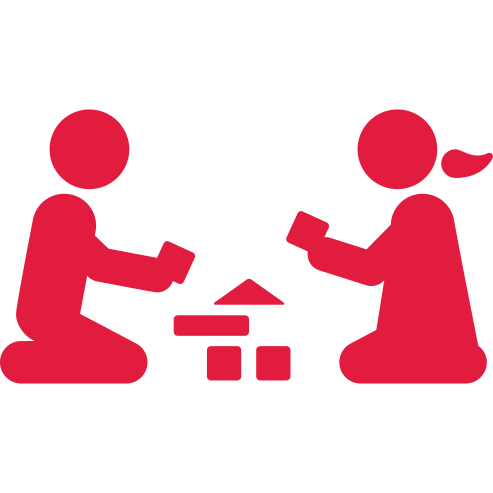
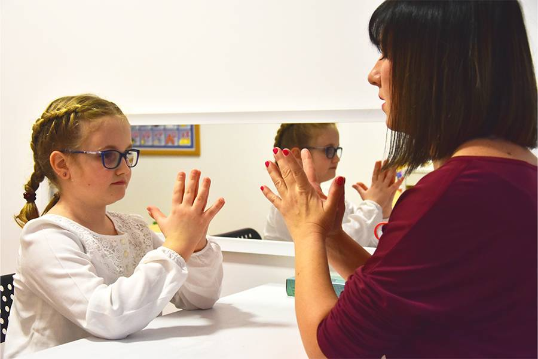

Disleksija podrazumeva poteškoće u učenju koja posebno umanjuje sposobnost
dece/odraslih da čitaju
ili razumeju pročitano. Takve osobe obično čitaju na nivou znatno nižem od očekivanog, iako
imaju
normalnu inteligenciju.

Artikulacija
Deca sa poteškoćama u artikulacija ne mogu jasno da izgovaraju glasove. Često možemo čuti
da reč RIBA zvuči kao IBA, JIBA, VIBA, LIBA ili RIBA sa francuskim R.
Mucanje
Nekada deca mogu imati poteškoće u fluentnosti ( tečnosti govora ). Mucanje je poremećaj
tečnosti, tempa i ritma govora praćeno ponavljanjem delova reči i rečenica...

Rana stimulacija
Najosetljiviji period razvoja govora traje od rođenja do treće godine života.
Rani uzrast (rano detinjstvo) je ključan za razvoj maternjeg jezika i ne treba čekati i
propuštati dragoceni period za dečiji razvoj govora.

Naše usluge
Dobro došli u logopedski centar Logobell
Komunikacija je važan deo našeg bića i može biti frustrirajuće ukoliko ne možemo dobro da
komuniciramo sa svojom decom ili ih teško razumemo.
Uz našu stručnu pomoć i vaše učešće i saradnju, put do otklanjanja problema u komunikaciji
biće
značajno olakšan.
Logoped može da pomogne:
deci sa poteškoćama u
razumevanju i upotrebi govora,
deci sa poteškoćama u uspostavljanju kontakta, komunikacije i
interakcije sa osobama u okruženju,
deci sa poteškoćama u usmeravanju i održavanju pažnje,
deci sa poteškoćama sa izgovorom pojedinih glasova i/ili zamuckivanjem,
deci sa problemima u učenju i savladavanju školskih veština ( čitanje, pisanje,
računanje ),
deci sa poremećajima osnovnog glasa ( jačina, boja, intenzitet, raspon).
Rana prevencija i dijagnostika su važne. Zato se javite na vreme i konsultujte nas.
Zajedno ćemo maksimalno razviti potencijale vašeg deteta.
Procena govorno-jezičkog razvoja
Pitate se zašto dete još ne govori, zašto je izgovor nerazumljiv, zašto dete poznaje i
upotrebljava malo reči, zašto ih dete ne razume, a neki roditelji su zabrinuti zbog
ponavljanja ili
zapinjanja u govoru deteta.
Rana stimulacija
Najosetljiviji period razvoja govora traje od rođenja do treće godine života.
Rani uzrast (rano detinjstvo) je ključan za razvoj maternjeg jezika i ne treba čekati i
propuštati dragoceni period za dečiji razvoj govora.
Razvoj govora kroz igru se započinje sa decom koja imaju socijalnu
interakciju
i primarno razumeju i koriste neverbalnu komunikaciju.
Govor koriste slabo ili ga ne koriste. Razvoj govora se podstiče uz prisustvo roditelja kroz
igru.
Od rođenja deca istražuju svoja čula i obrađuju nove informacije. Počinju da shvataju
svet oko sebe. Senzorna
igra je dragoceni način uključivanja dece u aktivnosti koje će ojačati njihova čula i
obogatiti njihovo učenje.
Senzorna igra pomaže deci da opažaju i upoznaju stvari koje ih okružuju. Podržava njihov
jezički
razvoj i podstiče ih da efikasno komuniciraju sa drugima dok se igraju.
Angažovanje deteta u senzornoj igri pomaže razvoju mozga, što
povećava njegovu memoriju i sposobnost ispunjavanja složenijih zadataka.
U našem centru koristimo i pravimo različite materijale, koji podstiču razvoj određenih
čulnih
doživljaja, prolagođene svakom detetu ponaosob.

Montesori metoda
U našem Logopedskom centru Logobell, u radu sa decom
koristimo, elemente
Montesori pedagogije.
Sertifokovani smo za rad sa decom predškolskog uzrasta.

Učenje kroz igru
Razvoj govora kroz igru se započinje sa decom koja imaju
socijalnu
interakciju
i primarno razumeju i koriste neverbalnu komunikaciju.
Govor koriste slabo ili ga ne koriste. Razvoj govora se podstiče uz
prisustvo roditelja kroz
igru.
Rana stimulacija
Najosetljiviji period razvoja govora traje od rođenja do treće godine
života.
Rani uzrast (rano detinjstvo) je ključan za razvoj maternjeg jezika i ne
treba čekati i
propuštati dragoceni period za dečiji razvoj govora.
Prilagođen prostor
Prostor je opremljen profesionalnom opremom za razvoj senzomotorike i
prilagođen je radu sa decom
kojima je potrebna dodatna podrška. Osim opreme namenjene za razvoj
krupne i fine motorike prostor
sadrži
didaktički materijal
i igračke namenjene edukativnom razvoju dece.
Korisni saveti

Oralna praksija predstavja voljno kretanje mišića govornog aparata odnosno usana,
jezika, vilice, nepca i obraza.
Da bi deca pravilno izgovarala glasove preduslov je dobro razvijena oralna praksija
i da mišići koji učestvuju u govoru mogu da izvedu sve pokrete neophodne za njihovu
pravilnu artikulaciju.
Ovde ćemo navesti par vežbi koje možete raditi sa Vašim detetom kako bi mu pomogli
da “razmrda” govorni aparat.
Cilj ovih vežbi je poboljšanje u preciznosti izvodjenja pokreta donje vilice, usana
, mekog nepca, obraza, jezika...
Vežbe govornih organa :
• Disanje na nos
• Disanje na usta
• Imitiranje pokreta žvakanja
• Naizmenično otvaranje I zatvaranje usta
• Pućenje usana( pojubac )
• Imitiranje pokreta sisanja
• Usisavanje usana
• Grickanje donje usne
• Pokretanje donje vilice levo - desno
• Dodirivanje donje I gornje usne vrhom jezika
• Oblizivanje
• Dodirni vrhom jezika nos
• Dodirni vrhom jezika bradu
• Kruženje vrhom jezika po spoljašnjoj površini gornjih zuba
• Lizanje ivice zuba vrhom jezika
• Guranje vrhom jezika unutrašnju stranu obraza
• Presavijanje vrha jezika prema gore, iza gornjih zuba
• Presavijanje vrha jezika prema dole, iza donjih zuba
• Prvljenje luka prednjim delom jezika
• Treperenje usana
• Duvanje u pištaljku
• Pravljenje balončića od sapunice
• Ispijanje soka na cevčicu
• Duvanje u vodu kroz cevčicu
• Naduvavanje obraza vazduhom
GOSPOĐA JEZIK- vežbe za bolju artikulaciju glasova
Ovo je priča o Gospođi Jezik. Ova gospođa ( ISPLAZITI JEZIK) je jako volela da
sprema po kući i popravlja stvari po njoj .
Jednog dana je rešila da počisti podove ( JEZIKOM OBILAZITI ZUBE), zamalo da
zaboravi ćoškove ( JEZIK U JEDAN UGAO PA U DRUGI ), o i plafon mora da se očisti (
JEZIK PO NEPCU NAPRED - NAZAD ), posle je prešla na tepihe, istresla ih je (
BLA-BLA-BLA-BLA). Uzela je usisivač ( PA- PA-PA -PA ), o baš se umorila.
Sela je da popije čaj, stavila je čajnik na šporet i ukoro začula zvuk ( S S S S S S
S S). Dok je pila čaj videla je ekser na zidu, brzo je uzela čekić da ga zakuca (T T
T T T T ), a onda je čula kako šušti cev koja dolazi iz podruma, udarila je cev
čekićem nekoliko puta ( K K K K K ) taman kada je završila čula je bebu kako plače (
VA- VA - VA -VA - VA) , pošla je da vidi šta se dešava. Popela se stepenicama na
sprat ( T-K-T-K-T-K-T-K-T-K), rekla je bebi ( ŠŠŠŠŠŠŠŠ) spavaj a beba njoj ( NO - NO
- NO ). Onda je gospođa Jezik uzela bebu i počela da peva ( LALALALALA) i beba je
zaspala.
Gospođa Jezik je sišla dole ( T-K-T-K-T-K-T-T-K), i otišla je da se istušira (
ŠŠŠŠŠŠŠŠŠŠ), a onda je uzela fen i sušila kosu ( ZZZZZZZZZZZZZZZZ) navila je kosu (
AU AU AU AU ) i stavila je lak ( SSSSSSSS ) Kada je bila spremna otišla je u
prodavnicu .
Vežbajte sa Vašim detetom pravilnu artikulaciju glasova
Pisanje je složena aktivnost u kojoj učestvuje veliki broj mišića ruke,šake i
prstiju kojom upravlja mozak.
Razvojem vizuo-motorne percepcije koja se vremenom automatizuje, pisanje postaje
automatska radnja. Razvoj grafomotorne sposobnosti počinje u uzrastu od 18 meseci
ali najčešće se smetnje u njenom razvoju ako postoje uočavaju sa polaskom u školu.
Fina motorika je od suštinskog značaja za pisanje tako da je važno stimulisati njen
razvoj u kućnim uslovima mnogo pre polaska u školu.
Dete u uzrastu od godinu dana drži olovku i njome oponaša šaranje po papiru,a u
uzrastu od 18 meseci počinje sa aktivnostima šaranja,škrabanja po papiru, da bi sa
dve godine počelo da drži olovku palcem, kažiprstom i srednjim prstom i oponaša
povlačenje vertikalne limije. Sa dve i po godine rado se igra olovkom i
papirom,povlači vertikalne i horizontalne linije, crta nekoliko puta kruga do treće
godine trebalo bi da ume da precrta krug. Pored aktivnosti koje su direktno usmerene
na korišćenje olovke sve ostalo što dete radi rukama doprinosi razvoju fine motorike
i grafomotorike.
Neke od tih aktivnosti su sledeće:
-hvatanje zvečke;
-držanje kocke,premeštanje iz ruke u ruku;
-hvatanje različitih oblika koji su okačeni iznad glave;
-listanje slikovnica;
-maženje lutke,mede;
-kotrljanje,bacanje i hvatanje lopte;
-ubacivanje različitih oblika u odgovarajuće otvore;
-ubacivanje igračaka u kutiju;
-pokazivanje na sebi a kasnije na mami, lutki, medi
oko,nos,usta,uši,kosu,ruke,noge,pupak…;
-držanje kašike i pokušaj samostalnog hranjenja;
-povlačenje igračke na uzici;
-šaranje olovkom po papiru;
-samostalno držanje čaše iz koje pije vodu;
-svlačenje i oblačenje odeće i obuće;
-stavljanje poklopca na kutiju;
-otvaranje i zatvaranje flaše;
-navijanje igračke;
Da bi dete razvilo sve funkcije šake potrebno je da ima i odgovarajuću stimulaciju
putem igre i igračaka. Da bi igra imala puni efekat potrebno je stimulisati dete da
se igra u različitim položajima,na leđima,potrbuške,na boku,u
sedećem,četvoronožnom,klečećem i stojećem položaju.
Kada govorimo o radu i funkciji mozga, treba da obratiti posebnu pažnju na
koncentraciju. Koncentracija je ta koja ukazuje na ono što je novo, zanimljivo i
pobuđuje radoznalost i motivaciju.
Deca školskog uzrasta često nisu koncentirsana i fokusirana. Bilo koji spoljni
stimulusi mogu ih odvratiti od započetog posla, pa je veoma važno naučiti ih kako da
ignorišu periferne stimuluse. Fokus se postiže vežbanjem, zato se deci zadaju
zadaci. Kako bi usmerila pažnju, deca moraju biti oslobođena od unutrašnjih sukoba.
Neke od zabavnh vežbi za koncentraciju i pažnju su:
Opišite predmet zatvorenim očima – Naučite dete da dobro osmotri
objekat. Zatim sa zatvorenim očima treba da opiše detalje. Na ovaj način, deci se
podstiče koncentracija i pamćenje, a mogu se organizovati i igre takmičenja (koje
dete će upamtiti više detalja)
Kros pokret – vežbe koje istovremeno aktiviraju obe hemisfere
mozga i poboljšavaju koordinaciju levo-desno, pravilno disanje. Dete naizmenično
dodiruje desno koleno levim laktom i levo koleno sa desnim laktom.
Didaktičke igre - Dobar izbor su slagalice, domine sa brojevima
ili slikama.
Klasifikacije - Na primer neka dete iz grupe igračaka izdvoji samo
plave igračke, ili životinje koje imaju slične karakteristike, ili dozvoliti im
sortiranje sudove kod kuće i sl.
Crteži - Prvi crtež jednostavan a kasnije sve složeniji crteži
(npr. leptir – prvi crtež samo sa krilima, a u svakom narednom sve bogatiji i
složeniji oblici i boje na krilima).
Pronalaženje razlika na crtežima – poređenje šta se promenilo, šta
je izostavljeno ili dodato.
Zadaci razmišljanja – “Kada stignemo do prodavnice …” “Šta vam je
potrebno pripremiti ako želite da idete na letovanje/zimovanje?” , „Šta da spakujemo
za
igru kada idemo na izlet?“…
Norme urednog razvoja govora
U trećoj godini života deca postaju pričljivija, njihov rečnik je znatno veći i
često
ponavaljaju ista pitanja. U nastavku pogledajte koje su norme urednog razvoja govora
trogodišnjaka:
Razume razliku u značenju “idi-stani”, veliko-malo”, “gore-dole”
Izvršava 3 naloga
Razume pitanja: Šta leti, skače, pliva?
Postаvljа pitаnje: Ko, Štа?…
Za većinu stvari oko sebe ima reč, imenuje jednostavne radnje
Razume 3 predloga( na, u, pored)
Detetova najbliža okolina ga razume većinu vremena
Imenuje predmet koji želi
Može dа broji do tri
Sebe zove imenom
Može dа upoređuje određene boje
Znа dа recituje pesmicu i priča doživljaje
Pokаzuje prstimа koliko imа godinа, kaže svoj pol
Počinje da uspostavlja dominantnost ruke
Prаvilno crtа krug
Upotrebljava od 500 do 1000 reči
Pravilno izgovara glasove: A, E, I, O, U, J, V, P, B, T, D, K, G, F, H, M, N, NJ
Na uzrastu od 3,5-4,5 godine bi trebalo da savlada i izgovor glasova S, Z, C, Š, Ž,
L
Dopuštena odstupanja: S, Z, C, Š, Ž, L, Ć, Č, DŽ, Đ, LJ, R
Upotrebljava zamenice i množinu, koristi zamenicu JA
Upotrebljаvа priloge, predloge i prideve
Pridružuje se grupno vođenoj igri “Ringe raja”, često se igra “kao bajagi” igara(
prodavac, vaspitač, doktor)
Koristi negаtivne rečenice, koristi učtive fraze: molim, hvala, izvini
Samo se oblači, noću je suvo.
Odstupanja od razvojnih normi:
Ako dete ne izvršava složene naloge, ne povezuje dve reči, ako je govor nerazumljiv
bliskim osobama, ako je rečnik oskudan, a rečenice gramatički nepravilne, ukoliko je
simbolička odnosno “kao bajagi” igra odsutna , ukoliko je dete stalno u pokretu ili
je pak motorno nespretno, sapliće se i često pada, ako je dete agresivno prema sebi
i drugima, obavezno odvedite dete kod pedijatra. Takođe je na ovom uzrastu moguća
pojava zamuckivanja. Ukoliko vas to zabrinjava obratite se logopedu koji će vam dati
stučan savet.
Svako odstupanje od razvojnih normi ne mora nužno da bude pokazatelj kašnjenja u
razvoju. Razvojne norme nisu strogi pokazatelji trenutnog stanja razvoja deteta.
Isto tako one ne predstavljaju pokazatelje šta dete mora da postigne u određenom
uzrastu.
Recenzije:
Kostić, Đ & Vladisavljević, S. (1995). Govor i jezik deteta u razvoju (Language and
speech in child development). Zavod za izdavanje udžbenika i nastavna sredstva,
Beograd.
Kristal, D. (1996.). Kembrička enciklopedija jezika. Beograd: Nolit.
Mirjana Ašković, Nikola Atanacković, Ivan Ivić, Jadranka Novak (2004.), Razvojna
mapa,pregled osnovnih prekretnica u mentalnom razvoju dece od rođenja do 6-7 godine,
Beograd: Kreativni centar
U ovom periodu života podrazumeva se da dete već govori. U nastavku pogledajte koje
su norme urednog razvoja govora četvorogodišnjaka:
Rečnik u ovom periodu sаdrži od 1200 do 1500 reči. Potrebno je da dete pravilno
izgovara sledeće glasove : A, E, I, O, U, J, V, P, B, T, D, K, G, F, H, M, N,
NJ, S, Z, C, Š, Ž, L. Sa 4,5-5 godina bi trebalo da pravilno izgovara i glasove
Ć, Č, DŽ, Đ, LJ I R
Dopuštena odstupanja: Š, Ž, Ć, Č, DŽ, Đ ( u praksi se na ovom uzrastu pokazalo i
često odstupanje u izgovoru glasova L, LJ i R).
Govori punim rečenicama
Govor je razumljiv
Daje tačan odgovor na pitanja “Šta radiš kada si: “Gladan?” “Pospan?”, “Žedan ?”
Odgovara na jednostavna pitanja “Ko”, “Šta”, “Gde” i “Zašto”?
Priča o nečemu što mu se nedavno dogodilo, pravilnim redosledom
Govori vam o aktivnostima iz vrtića i druženjima s prijateljima
Rečnik u ovom periodu sаdrži od 1200 do 1500 reči. Potrebno je da dete pravilno
izgovara sledeće glasove
: A, E, I, O, U, J, V, P, B, T, D, K, G, F, H, M, N, NJ, S, Z, C, Š, Ž, L. Sa 4,5-5
godina bi trebalo da pravilno izgovara i glasove Ć, Č, DŽ, Đ, LJ I R
Dopuštena odstupanja: Š, Ž, Ć, Č, DŽ, Đ ( u praksi se na ovom uzrastu
pokazalo
i često odstupanje u izgovoru glasova L, LJ i R).
Kada petogodišnjak pokrene razogovor nemojte ga prekidati, poklonite mu pažnju. U
produžetku pročitajte koje su norme za uredni razvoj govora u ovom dobu:
Govor je u potpunosti gramatičan
Definiše jednostavne reči
Priča priče po slikama i prepričava ih
Izvršava tri uzastopna naloga
Prosečno upotrebljava 2000 reči
Sa 5,5 godina bi trebalo pravilno da izgovara sve glasove maternjeg jezika
Broji do 10
Crta čoveka šematski, seče makazama po liniji, boji crteže
Crta krug, kvadrat i trougao
Oblači se i skida bez pomoći
Počinje da shvata pravila raznih igara
Može da se koncentriše na kratke priče i da postavlja pitanja o njima
Razume većinu toga što čuje kod kuće i u vrtiću
Razume predloge: iza, ispred.
Koristi rečenice s puno detalja (Najveća lopta je moja)
Lako komunicira sa odraslima i drugom decom
Imenuje neka slova i brojeve
Razlikuje jutro od večeri
Poznaje sva 4 godišnja doba
Razlikuje boje.
Odstupanja od normi razvoja:
Ako dete ne može da ispriča kratak sled događaja, ako postoje smetnje u razumevanju
složenih jezičkih konstrukcija, ako je govor nerazumljiv, ako je izgovor pojedinih
glasova nepravilan, ukoliko se nefluentnost govora(mucanje) ne gubi i ako postoje
teškoće u sporazumevanju sa drugom decom, obavezno odvedite dete kod logopeda.
Svako odstupanje od razvojnih normi ne mora nužno da bude pokazatelj kašnjenja u
razvoju. Razvojne norme nisu strogi pokazatelji trenutnog stanja razvoja deteta.
Isto tako one ne predstavljaju pokazatelje šta dete mora da postigne u određenom
uzrastu.
Naš tim
Miljana Mihailović-Vuletić
Logoped
Diplomirala je na fakultetu za specijalnu edukaciju i rehabilitaciju ( FASPER ) u Beogradu.
Tokom studija, angažovana je kao personalni asistent deci koja imaju
potrebu za dodatnom podrškom. Pripravnički staž je završila u Domu zdravlja "Milutin Ivković",
Palilula i
Zavodu za psihofiziološke poremećaje i govornu patologiju "Dr Cvetko Brajović".
Višegodišnje iskustvo kao stručni saradnik i terapeut, sticala je u predškolskim ustanovama:
"Radoznalac", "Kiwi", "Eci peci pec", pedijatrijskoj ordinaciji "Neopediatrica" i
u Centru za podršku razvoja deteta "Kutak razvijutak".
Trenutno je angažovana kao stručni saradnik u Predškolskoj ustanovi "Čarobni kutak" i
logopedskom centru "Logobell".
Ljubica Šljukić
Psiholog
Diplomirala je studije Psihologije na Filozofskom
fakultetu u Beogradu. Tokom studija, volonterski se angažovala u udruženju "Daj mi ruku" na dva
projekta. Kroz projekat "Znam ja, znaces i ti" radila je sa decom predškolskog uzrasta na
socio-emocionalnom razvoju. Kao asistent na drugom projektu, "Saradnik u pružanju dodatne
podrške dečjem razvoju i napredovanju" usmeravala je studente koji su radili sa decom koja imaju
potrebu za dodatnom podrškom.